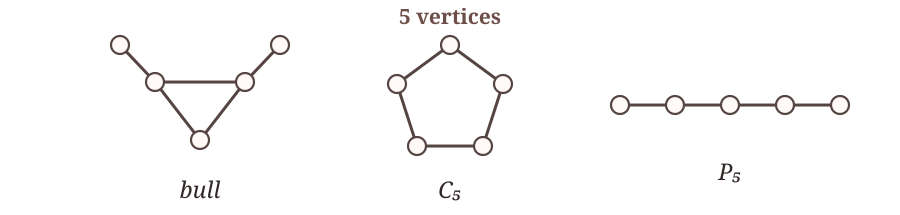
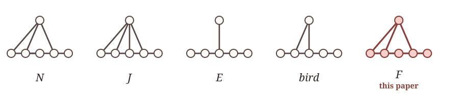

I have a decent background in maths, mostly in algebraic geometry and number theory.
I stopped maths after my first Ph.D. year to pursue machine learning. After a few years, while ML/AI is still an active area, its academic side feels contaminated with AI right now: tons of submissions, tons of acceptances, and peer review is kinda broken. I want to step away from it for a while. I’ll still follow new work, but I’m stopping working on it myself. Waiting for some changes.
My focus is shifting to AI in maths, which also happens to be the current hype and trend. Not because it’s trendy, but because I think my background is a good fit.
I started exploring AI-assisted maths after the announcement of a counterexample to the Jacobian conjecture. I had been skeptical of OpenAI’s Erdős unit-distance announcement, but this time AI was making progress on something I was actually familiar with. I first learned about the Jacobian conjecture, probably from Hartshorne’s AG, and that pushed me to try AI in maths myself.
At first, I was a bit clumsy with AI. While I do use AI for other tasks, using it for maths feels weird. Sometimes it was good; sometimes it was bad. Slowly, though, I kinda got a feel and an intuition for it. Reading its CoT alongside my own reasoning helped me ask better questions. Gradually, I became impressed by how well it could develop arguments with a human in the loop.
⟶ LLMs are good at connecting the dots, and they know almost all the existing dots.
I think most mathematicians agree that maths isn’t just about solving problems. The deeper goal is understanding. Open problems and conjectures are milestones; their value lies in the theory and techniques developed along the way. My rough intuition is that, when looking at a problem, humans tend to find a new dimension, a bird’s-eye view that helps us see and understand it, while AI explores a vast “linear span” of existing techniques.
⟶ This isn’t a firm boundary: sometimes, unexpected combinations can be considered creative.
For each result, we give a short summary of the literature and the status of the problem, followed by what we prove. Sometimes we also share a working log from the process, with further related results and open questions. However, these logs are meant as material for AI models to explore further, not for humans to read.
Bouvier's conjecture and dimension sequences of UFDs
arXiv, 2026
Seidenberg's 1954 inequalities give \(\dim R+1\leq\dim R[X]\leq2\dim R+1\) for every finite-dimensional domain \(R\), and every value in this interval can occur.
A finite-dimensional domain \(R\) is Jaffard if \(\dim R[X_1,\ldots,X_r]=\dim R+r\) for every \(r\geq1\); otherwise it is non-Jaffard. Announced by Bouvier in 1985 and published in a stronger factorial form by Bouvier and Kabbaj in 1988, the conjecture asks whether some finite-dimensional Krull domain is non-Jaffard. Its equivalent one-variable form became Problem 37 in the 2014 collection Open Problems in Commutative Ring Theory by Cahen, Fontana, Frisch, and Glaz. It asks whether a finite-dimensional Krull domain \(R\) can satisfy \(\dim R[X]\gt\dim R+1\), and more particularly whether \(R\) can be chosen to be a UFD.
We construct a UFD \(R\) with \(\dim R=2\) and \(\dim R[X]=4\), and therefore prove Bouvier's conjecture.
(update) We characterize the complete range of \(\dim R[X]\), with UFD examples:
Let \(m,n\) be positive integers. There exists a UFD \(R\) such that \(\dim R=n\) and \(\dim R[X]=m\) if and only if \(n+1\leq m\leq2n\).
Thus the Krull condition excludes Seidenberg's upper endpoint \(2n+1\).
(update) We characterize all dimension sequences of UFDs:
Let \((a_n)_{n\geq0}\) be an integer sequence with \(a_0=d\geq0\). There exists a UFD \(R\) such that
\(\dim R[X_1,\ldots,X_n]=a_n\quad\text{for every }n\geq0\)
if and only if
\(\displaystyle a_n+1\leq a_{n+1}\leq a_n+\left\lfloor\frac{a_n+1}{n+1}\right\rfloor\quad(n\geq0)\),
and \(a_1\leq2d\) whenever \(d\geq1\).
A one-dimensional coherent domain with non-Prüfer integral closure
PDF, 2026
A domain \(R\) is coherent if every finitely generated ideal is finitely presented, and Prüfer if every nonzero finitely generated ideal is invertible. Write \(R'\) for its integral closure in its fraction field.
The Krull–Akizuki theorem, as stated in the Stacks Project (2026), says that a one-dimensional Noetherian domain has Dedekind, hence Prüfer, integral closure. Papick (1979) showed that a one-dimensional coherent normal domain is Prüfer.
This led to the question: must every one-dimensional coherent domain have Prüfer integral closure?
The local form appeared in Papick (1978), then as Conjecture \(C_3\) in Glaz–Vasconcelos (1984), Problem 65 in Chapman–Glaz (2000), and Problem 3 in the 2014 collection Open Problems in Commutative Ring Theory. It was still open in Geroldinger–Kim–Loper's February 2026 survey.
Here is a list of additional hypotheses that give positive answers:
We answer the original question negatively:
There exists a one-dimensional coherent local domain whose integral closure is not Prüfer.
We also prove that our counterexample satisfies none of these additional hypotheses as listed.
On the Krull dimensions of rings of integer-valued polynomials and polynomial rings
PDF, 2026
For a domain \(R\) with quotient field \(K\), \(\operatorname{Int}(R)=\{f\in K[X]:f(R)\subseteq R\}\). Although \(R[X]\subseteq\operatorname{Int}(R)\), Krull dimension is not monotone under ring extensions, so the two dimensions are not automatically ordered.
Cahen (1990) proved the universal lower bound \(\dim R[X]-1\leq\dim\operatorname{Int}(R)\) and gave examples attaining it. Fontana and Kabbaj (2004) formulated the reverse bound \(\dim\operatorname{Int}(R)\leq\dim R[X]\) as a conjecture; Chabert (2010) later recorded it as a question, and it became Problem 14 in the 2014 collection Open Problems in Commutative Ring Theory by Cahen, Fontana, Frisch, and Glaz.
Positive answers were known for finite-dimensional Jaffard domains (1997), domains of Krull type (1999), locally essential domains (2004), and the flat case (2016); more recent work (2026) added further Jaffard-like and intermediate-ring cases.
The general problem was still open: for an arbitrary domain \(R\), must \(\dim R[X]-1\leq\dim\operatorname{Int}(R)\leq\dim R[X]\) hold?
We answer this question negatively and, moreover, classify every finite pair that can occur as \((\dim R[X],\dim\operatorname{Int}(R))\):
For positive integers \(m,n\), there exists a domain \(R\) with \(\dim R[X]=m\) and \(\dim\operatorname{Int}(R)=n\) if and only if \((m,n)=(1,1)\), \((m,n)=(2,2)\), or \(m\geq3\) and \(n\geq m-1\).
Polynomial extensions do not preserve the strong finite type property
arXiv, 2026
Arnold introduced strong finite type (SFT) rings in 1973 while studying Krull dimension in formal power-series rings. An ideal \(I\) is SFT if it contains a finitely generated ideal \(B\) and there is an \(N\geq 1\) such that \(a^N\in B\) for every \(a\in I\); a ring is SFT if all its ideals are.
For polynomial extensions, Park (2019) proved preservation for zero-dimensional SFT rings, SFT Prüfer domains, and SFT domains whose prime quotients are integrally closed. Coykendall–Dutta (2024) proved that every extended SFT ideal \(IR[X]\) is SFT, but still listed whether \(R[X]\) must be SFT whenever \(R\) is SFT as open.
We answer the question negatively by constructing a counterexample:
There exists a SFT ring \(R\) such that \(R[X]\) is not SFT.
We include a working log that determines properties of the constructed counterexamples and their polynomial and formal power-series extensions, including their SFT, VSFT, and \(t\)-SFT status, Krull dimensions, prime-chain cardinalities, and more. working log
The Noetherian case of Bayart's power-series question
arXiv, 2026
Marc Bayart (1973) asked whether \(R[[x]]\) being a UFD forces \(R[[x,y]]\) to be a UFD. It was recorded as still open in July 2026 [Jones–Paran, 2026].
We prove the Noetherian case of this problem:
Let \(R\) be a commutative Noetherian ring. If \(R[[x]]\) is a UFD, then \(R[[x,y]]\) is a UFD.
The general case, without the Noetherian assumption, remains open.
Weak polynomial completeness does not imply almost polynomial completeness
arXiv, 2026
For an extension of domains \(D\subseteq A\), polynomial completeness (PC) means that \(D\) is polynomially dense in \(A\); almost polynomial completeness (APC) asks for \(\operatorname{Int}(D^n)\subseteq\operatorname{Int}(A^n)\) for every \(n\geq1\); weak polynomial completeness (WPC) asks only for \(n=1\).
Elliott (2007) proved that PC implies APC by successively specializing one variable at a time; APC implies WPC simply by taking \(n=1\).
Elliott (2009) gave the APC-but-not-PC example \(\mathbb Z[T]\subseteq\mathbb Z[T/2]\).
The remaining question, whether WPC implies APC, was left open there; Elliott (2013) later wrote that he expected a negative answer, and it became Problem 22 in the 2014 collection Open Problems in Commutative Ring Theory by Cahen, Fontana, Frisch, and Glaz.
We give a negative answer to this question:
There is an explicit extension of domains \(D\subseteq A\) such that \(\operatorname{Int}(D)\subseteq\operatorname{Int}(A)\), but \(\operatorname{Int}(D^n)\nsubseteq\operatorname{Int}(A^n)\) for every \(n\geq2\).
So WPC does not imply APC.
Some progress on the collection Open Problems in Commutative Ring Theory by Paul-Jean Cahen, Marco Fontana, Sophie Frisch, and Sarah Glaz
update soon
The Erdős-Hajnal property for the six-vertex graph with edge set \(\{ab,bc,cd,de,af,bf,df\}\)
arXiv, 2026
For a fixed graph \(H\), the Erdős–Hajnal conjecture asks whether every \(H\)-free graph on \(n\) vertices contains a clique or stable set of size at least \(n^{c(H)}\) for some \(c(H)>0\). Since the property is preserved by complementation and vertex substitution, it is enough to settle prime graphs.
For five vertices, the prime cases up to complementation were completed by Chudnovsky–Safra (2008) for the bull, Chudnovsky–Scott–Seymour–Spirkl (2021) for \(C_5\), and Nguyen–Scott–Seymour (2023) for \(P_5\).

There are \(26\) prime graphs on six vertices, forming \(13\) complementary pairs. Before this paper, \(N\) was settled by Nguyen–Scott–Seymour (2023); \(J\) follows from their leaf/co-leaf and \(P_5\) results together with the Bucić–Fox–Pham equivalence (2024); and \(E\) and the bird were settled by Huang–Ju–Zhou (2026).

We prove one more six-vertex graph:
The six-vertex graph \(F\) with edge set \(\{ab,bc,cd,de,af,bf,df\}\) has the Erdős–Hajnal property.
The proof adapts the iterative-sparsification method of Nguyen–Scott–Seymour (2023) within the comb-based framework of Huang–Ju–Zhou (2026), with a new \(F\)-specific analysis of comb interfaces.
This brings the total to 5 of the 13 complementary pairs, or 10 of the 26 prime graphs. The other 8 pairs remain open. We also tried a few of them, but could not settle any.
Acknowledgements. Thanks to Dung V. Nguyen, Khoi N. M. Nguyen, Quang X. Nguyen, Huu-Tho Tran, and Hieu M. Vu for their help with AI tools and hardware matters (alphabetical order).